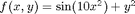
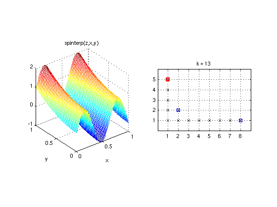

plotindices
Visualizes the index sets of a two-dimensional dimension-adaptive sparse grid.Syntax
plotindices(Z)
Description
plotindices(Z) Plots the set of multi-indices S_k of a two-dimensional dimension-adaptive sparse grid interpolant A_{S_k}(f). Z must be the sparse grid data as returned by spvals. spvals must be called with the option 'DimensionAdaptive' switched 'on' (this can be done using spset).
Examples
The following code constructs a dimension-adaptive sparse grid interpolant of the function

using greedy grid refinement (the degree of dimensional adaptivity is set to 1). The default interpolation box is range = [0,1]^2.
f = inline('sin(10.*x)+y.^2'); options = spset('DimensionAdaptive', 'on', 'DimAdaptDegree', 1); z = spvals(f, 2, [], options)
z =
vals: {[149x1 double]}
gridType: 'Clenshaw-Curtis'
d: 2
range: []
estRelError: 0.0018
estAbsError: 0.0039
fevalRange: [-0.9589 1.2500]
minGridVal: [0.5000 0]
maxGridVal: [0.1562 0.5000]
nPoints: 149
fevalTime: 0.3286
surplusCompTime: 0.0089
indices: [1x1 struct]
maxLevel: [7 4]
activeIndices: [3x1 uint32]
activeIndices2: [13x1 uint32]
E: [1x13 double]
G: [13x1 double]
G2: [13x1 double]
maxSetPoints: 7
dimAdapt: 1
The resulting interpolant is plotted using Matlab's ezmesh command and an anonymous function containing the call to spinterp. Plotting the multi-index sets used by the interpolant reveals that the refinement is more dense in the x-direction, since more points are required to resolve the oscillation of the sine curve. Due to the greedy refinement, only a single index (2,2) is computed in joint dimensions, since the error indicator of the multi-index (2,2) is equal to zero (f is a separable function).
subplot(1,2,1);
ezmesh(@(x,y) spinterp(z,x,y), [0 1]);
axis square;
subplot(1,2,2);
plotindices(z);

See Also
plotgrid,
plotindices,
spgrid.